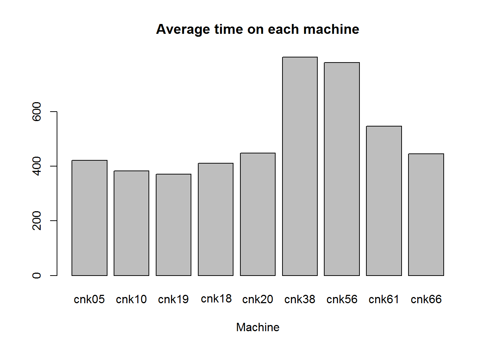
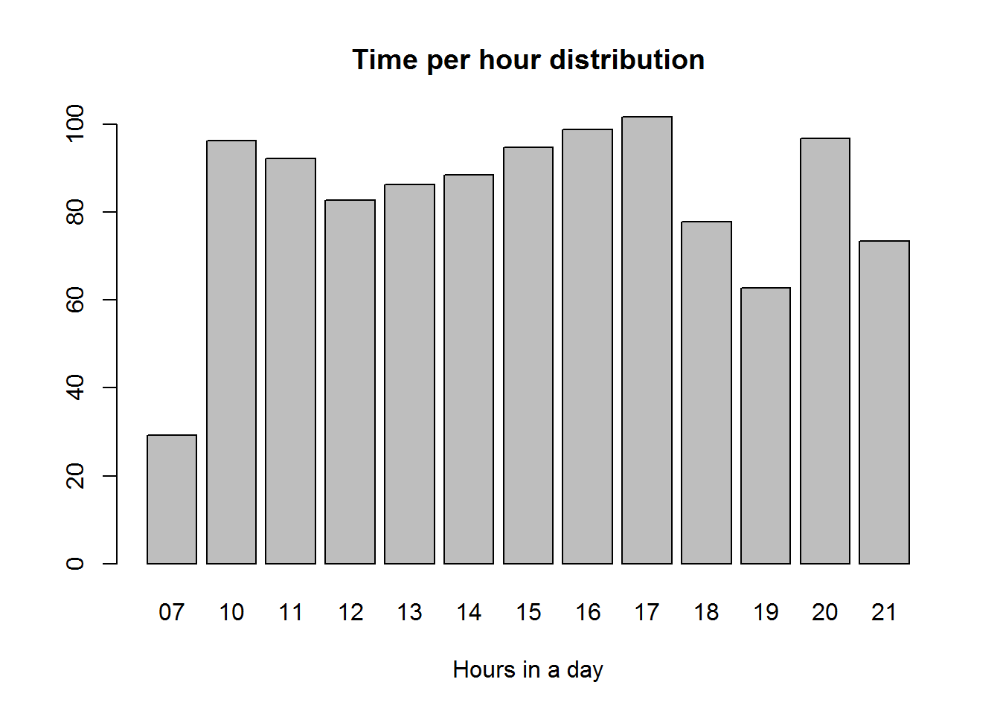
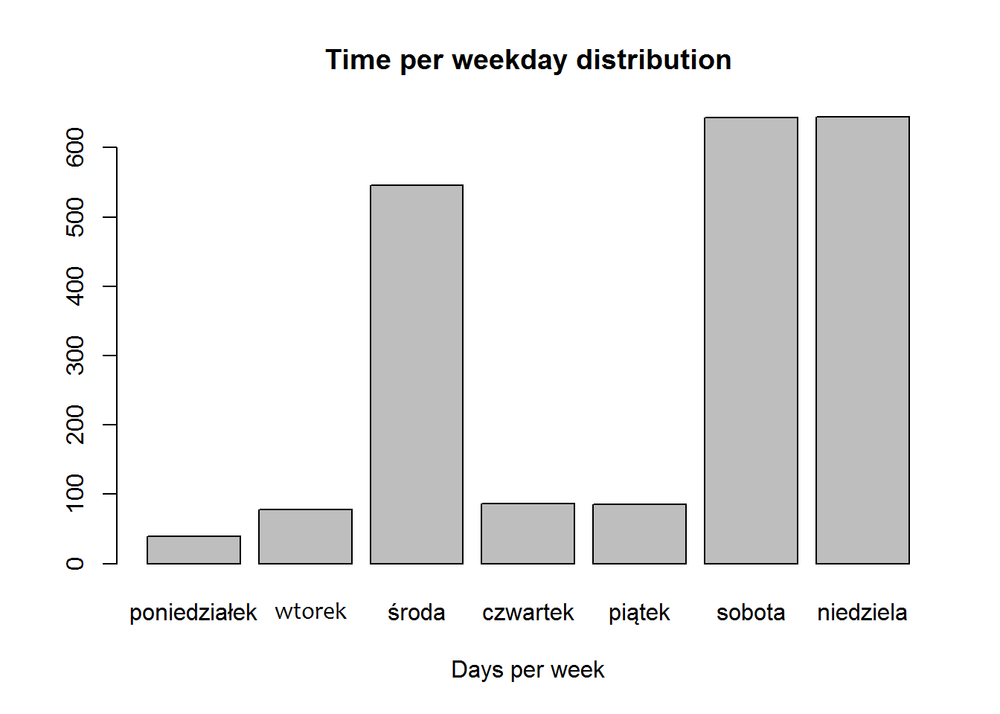
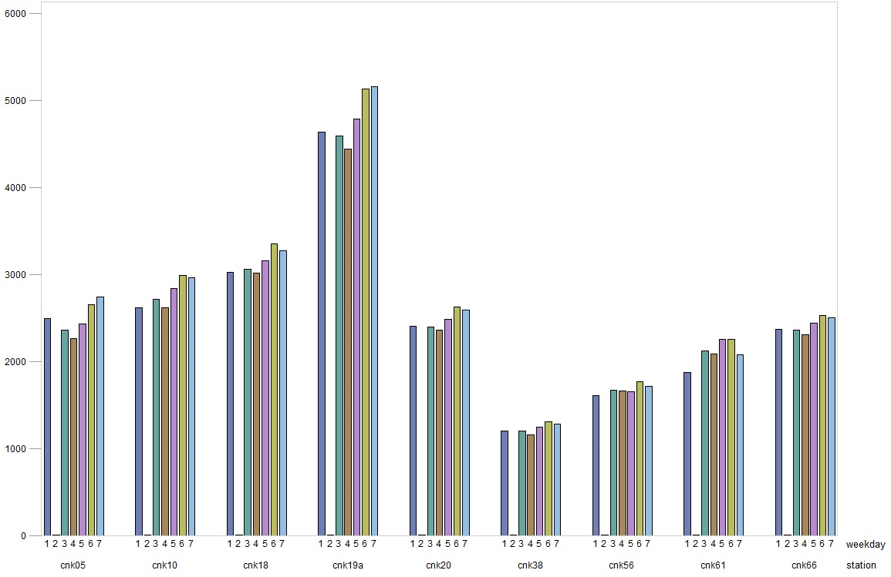

In the first phase you should characterize types of interactions with different machines (exploratory analysis). Try to answer following questions:
load("verySmallLogs.rda")
library(lubridate)
verySmallLogs$dayOfWeek = strftime(verySmallLogs$date,'%A')
verySmallLogs$dayOfWeekNumber = as.numeric(strftime(verySmallLogs$date,'%u'))
verySmallLogs$hour = substr(as.character(verySmallLogs$date), 12, 13);
verySmallLogs = verySmallLogs[order(verySmallLogs$dayOfWeekNumber), ]library(sqldf)
time_per_visitor <- sqldf('SELECT station, visitor, MAX(date) - MIN(date) as time FROM verySmallLogs WHERE visitor!=-1 GROUP BY station, visitor')
summary(time_per_visitor$time)## Min. 1st Qu. Median Mean 3rd Qu. Max.
## 0.0 36.0 67.0 470.3 107.0 1012000.0avg_time_machine <- sqldf('SELECT station, AVG(time) as average_time FROM time_per_visitor GROUP BY station')
avg_time_machine## station average_time
## 1 cnk05 421.5793
## 2 cnk10 383.1120
## 3 cnk18 370.2492
## 4 cnk19a 410.0810
## 5 cnk20 447.8235
## 6 cnk38 798.9904
## 7 cnk56 779.1041
## 8 cnk61 546.8247
## 9 cnk66 445.2952barplot(avg_time_machine$average_time, main="Average time on each machine",
xlab="Machine", names.arg = avg_time_machine$station)
time_per_day_visitor = sqldf('SELECT station, visitor, MAX(date) - MIN(date) as time, dayOfWeek, dayOfWeekNumber FROM verySmallLogs WHERE visitor!=-1 GROUP BY station, visitor, dayOfWeekNumber')
time_per_day_machine <- sqldf('SELECT station, dayOfWeek, dayOfWeekNumber, AVG(time) as average_time FROM time_per_day_visitor GROUP BY station, dayOfWeekNumber')
time_per_day_general = sqldf('SELECT dayOfWeek, dayOfWeekNumber, AVG(average_time) as average_time_per_day FROM time_per_day_machine GROUP BY dayOfWeekNumber')
time_per_day_and_hour_visitor = sqldf('SELECT station, visitor, MAX(date) - MIN(date) as time, dayOfWeek, dayOfWeekNumber, hour FROM verySmallLogs WHERE visitor!=-1 GROUP BY station, visitor, dayOfWeekNumber, hour')
time_per_day_and_hour_machine <- sqldf('SELECT station, dayOfWeek, dayOfWeekNumber, hour, AVG(time) as average_time FROM time_per_day_and_hour_visitor GROUP BY station, dayOfWeekNumber, hour')
time_per_day_and_hour_general = sqldf('SELECT dayOfWeek, dayOfWeekNumber, hour, AVG(average_time) as average_time_per_day FROM time_per_day_and_hour_machine GROUP BY dayOfWeekNumber, hour')
time_per_hour_general = sqldf('SELECT hour, AVG(average_time) as average_time_per_hour FROM time_per_day_and_hour_machine GROUP BY hour')
time_per_day_general = sqldf('SELECT dayOfWeek, dayOfWeekNumber, AVG(average_time) as average_time_per_day FROM time_per_day_and_hour_machine GROUP BY dayOfWeek order by dayOfWeekNumber')
# Time per day and machine
time_per_day_machine = time_per_day_machine[, !(colnames(time_per_day_machine) %in% c("dayOfWeekNumber"))]
head(time_per_day_machine)## station dayOfWeek average_time
## 1 cnk05 poniedziałek 445.8000
## 2 cnk05 wtorek 134.2129
## 3 cnk05 środa 130.7417
## 4 cnk05 czwartek 141.3537
## 5 cnk05 piątek 128.9372
## 6 cnk05 sobota 131.8436# Time per day
timer_per_day_general = time_per_day_general[, !(colnames(time_per_day_general) %in% c("dayOfWeekNumber"))]
time_per_day_general## dayOfWeek dayOfWeekNumber average_time_per_day
## 1 poniedziałek 1 38.92767
## 2 wtorek 2 77.45320
## 3 środa 3 545.48335
## 4 czwartek 4 86.28836
## 5 piątek 5 85.94088
## 6 sobota 6 643.38320
## 7 niedziela 7 644.37547time_per_day_and_hour_visitor = time_per_day_and_hour_visitor[order(time_per_day_and_hour_visitor$dayOfWeekNumber), ]
# Time per day, hour and machine
time_per_day_and_hour_machine = time_per_day_and_hour_machine[, !(colnames(time_per_day_and_hour_machine) %in% c("dayOfWeekNumber"))]
head(time_per_day_and_hour_machine)## station dayOfWeek hour average_time
## 1 cnk05 poniedziałek 08 0.0
## 2 cnk05 poniedziałek 09 249.5
## 3 cnk05 poniedziałek 10 30.0
## 4 cnk05 poniedziałek 12 0.0
## 5 cnk05 poniedziałek 13 0.0
## 6 cnk05 poniedziałek 14 35.0# Time per day, hour
time_per_day_and_hour_general = time_per_day_and_hour_general[, !(colnames(time_per_day_and_hour_general) %in% c("dayOfWeekNumber"))]
head(time_per_day_and_hour_general)## dayOfWeek hour average_time_per_day
## 1 poniedziałek 08 0.000000
## 2 poniedziałek 09 151.000000
## 3 poniedziałek 10 163.666667
## 4 poniedziałek 11 87.000000
## 5 poniedziałek 12 1.722222
## 6 poniedziałek 13 6.333333# Time per hour in general
time_per_hour_general## hour average_time_per_hour
## 1 07 29.16667
## 2 08 1229.64027
## 3 09 2023.44155
## 4 10 96.27043
## 5 11 92.18360
## 6 12 82.73116
## 7 13 86.34110
## 8 14 88.43934
## 9 15 94.76319
## 10 16 98.86632
## 11 17 101.69401
## 12 18 77.83606
## 13 19 62.78043
## 14 20 96.85000
## 15 21 73.37354# Time per hour
time_per_hour_general <-time_per_hour_general[time_per_hour_general$average_time_per_hour < 200, ]
barplot(time_per_hour_general$average_time_per_hour, main="Time per hour distribution",
xlab="Hours in a day", names.arg = time_per_hour_general$hour)
time_per_day_general = time_per_day_general[, !(colnames(time_per_day_general) %in% c("dayOfWeekNumber"))]
barplot(time_per_day_general$average_time_per_day, main="Time per weekday distribution", xlab="Days per week", names.arg = time_per_day_general$dayOfWeek)

The most average time spent was on ‘cnk38’ and ‘cnk61’. However, the number of interactions is the smallest on ‘cnk38’ and biggest on ‘cnk19’. The average time of interaction with machines is the biggest during the weekends and on Wednesdays. It is the smallest on Mondays. The machine labeled as ‘cnk19a’ is the most popular one regardless of the day of week, whereas the machine ‘cnk38’ is the least popular. There are no interactions between 10 PM and 7 AM (night) and between 8 and 10.